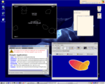
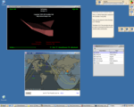
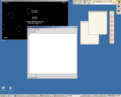
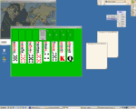

The following Screen Shots provide samples of applications that can be run in the POD Environment. Desktop Components wich are based on the Desktop Component Framework DCF and BLX are also shown. Note POD use to go by the name OCD and Some older screen shots use that name.
|  | Drichan's First Screen Shot of OCD 0.1 release. Running Asteroids Applet, SwingSet JNLP App, Sticky Notes, and Desktop Tiles. The Desktop Components are created using the DCF Framework |
|  | Drichan's Screen Shot of OCD 0.2 functionality. The new Master Tile is shown with embedded TileSets and a stand alone TileSet is docked on the Edge of the Screen. |
|  | Drichan's Screen Shot of OCD 0.3. This shot shows the Editor 0.1 Application running along with the Asteroids Applet. OCD 0.3 can now be launched from a native Windows Application that sits in the System Tray. |
|  | Drichan's Screen Shot of POD 0.6. This shot shows the main POD menu torn off, some sticky notes, the nasa JTrack applet, and the FreeCell applet. |